Viewing Object Information on the MIDM
The MIDM displays object profiles in a series of pages from which you can search for, select, and view object profiles. You can view information associated with any of the SBR or source record components in an object profile. The SBR contains the information that is determined to be the most current and accurate information about that object from all external systems.
The source records associated with a profile contain information that is stored in the external systems that share information with the master index application. The information in a source record might not match the information in the SBR. You can view several different types of information about an object, including the following:
Viewing Object Profiles on the MIDM
The Record Details page displays object profiles in a series of pages from which you can select and view profiles. You can view information associated with any of the SBR or source record components in an object profile. The SBR contains the information that is determined to be the most current and accurate information about that object from all local systems. By default, when the Record Details page first appears in view mode, only the information in the SBR is visible.
Figure 16 Record Details Page in View Mode
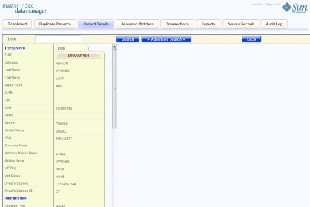To View an Object Profile
- Using one of the search methods described in Searching for Object Profiles on the MIDM, display the object profile you want to view on the Record Details page.
- To view different types of information in the SBR for the displayed object, simply scroll through the visible data fields.
- To view source records belonging to the profile, scroll to the bottom of
the data fields and then click View Sources.
All source records for the profile appear in a side-by-side comparison view.
- From the Record Details page, perform any of the following functions. The buttons
you click are all located at the bottom of the SBR.
- To modify object information, click Edit EUID and follow the appropriate procedure under Modifying Profile Information on the MIDM.
- To view a history of transactions for the displayed profile, click View History (for more information, see Viewing Transaction Histories on the MIDM).
- To deactivate a profile, click Deactivate (for more information, see Deactivating a Profile or Source Record).
- To unmerge a merged record, click Unmerge and then follow the instructions under
Unmerging Object Information on the MIDM.
This option is only available if the displayed profile is currently merged with another profile.
- To view an image of both profiles involved in the most recent merge
transaction, click View Merged Records.
An image appears of both profiles as they were prior to the merge. This option is only available if the displayed profile is currently merged with another profile.
- To view a merge history tree for the profile, click View Merge Tree.
This option is only available if the displayed profile is currently merged with another profile.
- When you are done viewing a profile, do any of the following. The
buttons you click are located at the top of the page.
- To return to the search results list, click Back.
- To look up another profile by EUID, click Search.
- To perform an advanced search for another profile, click Advanced Search.
Viewing a Source Record on the MIDM
The Source Record page displays source records in a series of search and view pages. You can view information associated with any of the SBR or source record components in an object profile. The SBR contains the information that is determined to be the most current and accurate information about that object from all local systems. By default, when the View/Edit page first appears, information in the SBR is visible.
The source records associated with a profile contain the information that is stored in the external systems that share information with the master index application. The information in an object’s source records might not match the information stored in the object’s SBR.
Figure 17 Source Record Page in View Mode
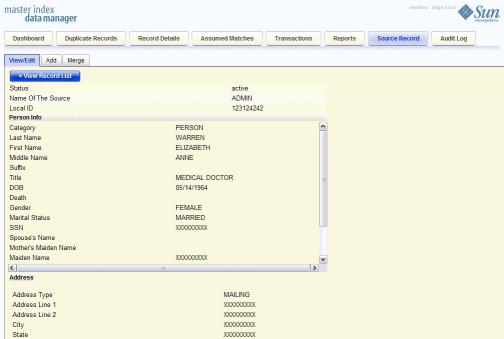To View a Source Record
- In the tabbed headings, click Source Records.
- Click the View/Edit sub-tab, if it is not already selected.
- In the System field, select the system from which the source record originated.
- In the Local ID field, enter the local ID number for the source record you want to view.
- Click Search.
If the local ID is found, the source record fields appear in view mode.
- From the Source Record View/Edit page, perform any of the following functions. The
buttons you click are all located at the bottom of the source record.
- To modify field values in the source record, click Edit and follow the appropriate procedure under Modifying Profile Information on the MIDM.
- To view the object profile that contains the displayed source record, click View EUID (for more information, see Viewing Object Profiles on the MIDM).
Comparing Object Information on the MIDM
The MIDM allows you to compare two or more object profiles side-by-side to check for similarities and differences. You can also compare different components of the same object profile and you can compare two or more source records from the same or different profiles.
Comparing Two or More Object Profiles
To compare two or more object profiles, you can either perform an EUID comparison lookup from the Dashboard, or you can select multiple records from a Record Details search. From the resulting comparison page, you can compare the resulting profiles and you can view the source records for the displayed profiles.
Figure 18 Record Details Page - Multiple Object Profiles
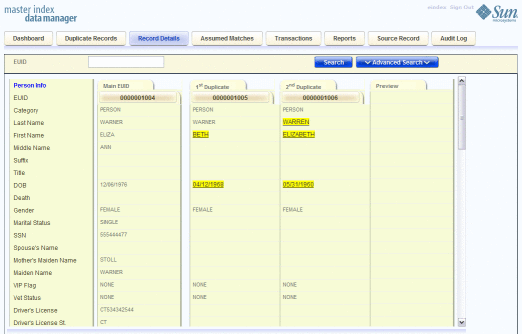To Compare Two or More Object Profiles
- Perform a search for the object profiles you want to compare, using on
of the following methods:
- If you know the EUIDs of the profiles you want to compare, lookup the EUIDs from the Dashboard as described in Performing an EUID Comparison Lookup .
- If you do not know the EUIDs of the profiles to compare,
perform a search on the Record Details page as described in Searching for Object Profiles on the MIDM, select the
check boxes next to the EUIDs to compare, and then click Compare.
The records appear on the Record Details page in a side-by-side comparison view.
- To view the source records for one of the displayed profiles, click View
Sources under that profile.
Tip - When you are done viewing the source records for a profile, click View Sources under that profile again to return to the comparison view.
- To view a transaction history for one of the displayed profiles, click View
History under that profile.
Tip - When you are done viewing the transaction history for a profile, click View History under that profile again to return to the comparison view.
- To merge object information, click the EUIDs of the profiles you want to merge, and then click Preview. Follow the instructions under Merging Object Profiles on the MIDM.
Comparing Source Records in one Object Profile
You can view the source records from one object profile displayed on the Record Details page in either view or comparison mode. This page does not provide merge functionality for source records. To merge source records, compare the records on the Source Record page as described in Viewing a Source Record on the MIDM.
Figure 19 Source Record Comparison From Record Details

To Compare Source Records in one Object Profile
- Perform a search for the object profile containing the source records you want to view, as described in Searching for Object Profiles on the MIDM.
- In the search results list, select the EUID of the profile you want
to view.
The Comparison page appears with SBR information displayed.
- Scroll to the bottom of the SBR information, and then click View Sources.
The source records belonging to the displayed profile appear.
- To edit any of the displayed source records, click Edit EUID at the bottom of the page and follow any of the procedures under Modifying Profile Information on the MIDM.
- To merge source records in the displayed object profile, make a note of their local ID numbers, and then follow the instructions under Merging Source Records on the MIDM.
Comparing Source Records From the Same or Different Object Profiles
To compare source records directly without accessing them from an object profile, you need to know the system and local ID numbers for the records. On the Source Record page, you can only compare records that originated from the same system.
Figure 20 Source Records Comparison
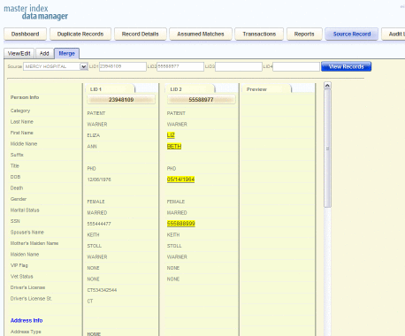To Compare Source Records in One or More Object Profiles
- In the tabbed headings, click Source Record.
- Click the Merge sub-tab.
- In the Source field, select the name of the source system from which the records you want to compare originated.
- In the Local ID fields, enter at least one and up to four local ID numbers.
- Click View Records.
Any matching source records side-by-side in a comparison view.
- To view the object profile for one of the source records, click View
EUID under that source record.
Tip - Clicking View EUID takes you out of the Source Records page and into the Record Details page. To return to the Source Record comparison page, click Back on the Record Details page.
- To merge any of the displayed source records, see Merging Source Records on the MIDM.
Viewing Transaction Histories on the MIDM
Using the Transactions function, you can view historical information for a specific object and compare the object’s profile before and after a specific transaction occurred to determine what information was modified as a result of the transaction. You can access the transaction history for a profile from the Record Details page, or you can access transaction histories for one or more profiles from the Transactions page.
When you display a transaction history from the Record Details page, all of the transactions for the displayed object profile appear in chronological order, with the earliest transaction on the left and the most recent transaction on the left. When you display a transaction history record from the Transactions page, the image of the profile as it was prior to the transaction appears on the left side of the comparison page. The image on the right reflects the object’s information after the transaction occurred.
To View a Complete Transaction History For an Object Profile
- Perform a search for the object profile whose history you want to view using one of the search procedures described in Searching for Object Profiles on the MIDM.
- If necessary, select the profile to view from the search results list.
The profile appears on the Record Details page.
- Scroll to the bottom of the displayed SBR, and then click View History.
A history of all transactions performed against the object profile appears.
Figure 21 Transaction History on the Record Details Page
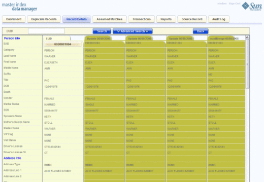 - Scroll through the profile's history using the window's internal scrollbar at the bottom of the profile.
To View Transaction History Records from the Transactions Page
- Obtain information about the object profile whose history you want to view, such as the EUID, a system in which the object was registered, or a specific transaction performed against the object’s profile.
- In the tabbed headings, click Transactions to open the Transactions Search page.
Figure 22 Transaction History Search Page
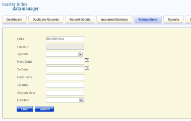 - Enter values into any of the search fields as criteria. For more information
about these fields, see About Transaction History Search Fields on the MIDM.
Note - The EUID field takes precedence over all other search fields on this page. You can only enter a local ID as search criteria after you have entered the corresponding system.
- Click Search.
The Transaction History search results list appears with a list of matching transactions (for more information, see About Transaction History Results Fields on the MIDM).
Figure 23 Transaction History Results
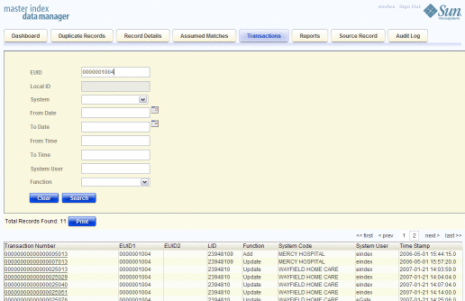 - Click a transaction number of a result to view the transaction on the
Transactions comparison page.
Figure 24 Transaction History Comparison Page
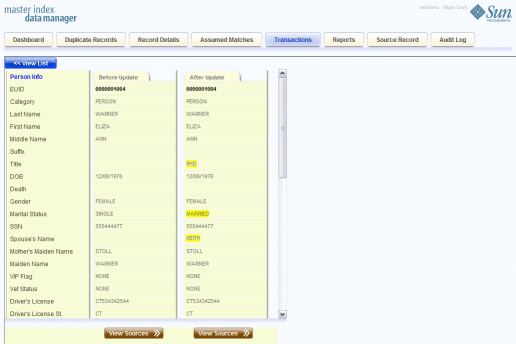Note - If you are viewing an unmerge transaction, the active record prior to being unmerged is displayed on the left. The after image of the two records that were unmerged during the transaction are displayed on the right.
- To view the source records for either the before or after profile, click View Sources beneath the profile image.
- If you are viewing a merge transaction that has not been unmerged, you can unmerge the records here. For more information, see Unmerging Object Information on the MIDM.
About Transaction History Search Fields on the MIDM
The fields located on the Transaction History Search page allow you to specify search criteria for the transactions you want to view. Note that the name of the Local ID field is customizable and might have been changed for your implementation. The search page can also be configured to display additional transaction fields. The following table lists the fields that are defined by default for a transaction history search.
Table 1 Transaction History Search Fields
In this field … |
type or select ... |
|---|---|
The object’s enterprise-wide unique identifier assigned by the master index application. |
|
The system in which the local ID is known. |
|
The local ID corresponding to the record you want to find and the system selected in the previous field. This field name might be different for your implementation. |
|
The beginning date for the search. The query is performed for transactions that fall between the From Date and To Date. |
|
The beginning time for the search using 24-hour notation. The query is performed for transactions that fall between the From Time and To Time on the specified dates. If no time is entered, the default value is 00:01 (12:01 A.M.). |
|
The ending date for the search. |
|
The ending time for the search using 24-hour notation. If no time is entered, the default value is 24:00. |
|
The login ID of the user who performed the transaction for which you are searching. |
|
The type of transaction that caused the object’s profile to change. See Table 3 for more information about transaction types. |
About Transaction History Results Fields on the MIDM
The fields located in the Transaction History search results list help you identify a specific object profile and transaction to view. Additional fields might be added to this page by the system administrator. The LID field is configurable and might have been changed for your implementation.
Table 2 Transaction History Results Fields
This field … |
displays this information … |
|---|---|
The sequential identification code of the transaction that caused the transaction history record. |
|
The enterprise-wide unique identification number of the first object profile involved in the transaction. |
|
The enterprise-wide unique identification number of the second object profile involved in the transaction. |
|
The local ID of the first source record involved in the transaction. |
|
The type of transaction that changed the object profile and caused the history record to be written. See Table 3 for a description of each transaction type. |
|
The name of the system in which the transaction that created the history record occurred. |
|
The login ID of the user who performed the transaction. |
|
The date and time the transaction occurred. |
Transaction History Transaction Types on the MIDM
Each transaction performed by the master index application is assigned a transaction type, indicating the type of action that was performed against the profile. The following table lists and describes each transaction type.
Table 3 Transaction Type Descriptions
Transaction Type |
Description |
|---|---|
This transaction type is assigned when a new object profile is added to the database, whether it is through a direct add or through reversing an assumed match. |
|
This transaction type is assigned when a deactivated object profile is reactivated. |
|
This transaction type is assigned when an active object profile is deactivated. |
|
This transaction type is assigned when two object profiles are merged. |
|
This transaction type is assigned when two object profiles are unmerged. |
|
This transaction type is assigned when two source records are merged. |
|
This transaction type is assigned when a source record is transferred from one object profile to another. |
|
This transaction type is assigned when two source records are unmerged. |
|
This transaction type is assigned when an object profile is modified in any way other than those described above. This includes such transactions as modifying an object profile, reversing an assumed match, deactivating or reactivating a source record, and adding or removing a child object (such as an address or telephone number). |
Viewing a Profile's Merge History on the MIDM
When an object profile that is currently merged is displayed on the Record Details page, you can display a history of all merges performed against the profile, allowing you to trace the origin of certain information contained in the profile. The master index application tracks all merges performed against each object profile in the database. You can view a history of merges that affect a specific object profile and you can view each EUID that was merged to form the final merge result profile. The merge history appears in a tree structure on the Record Details page, showing each pair of profiles that were merged under the displayed object profile.
To View an Object’s Merge History
- Using one of the search procedures described in Searching for Object Profiles on the MIDM, perform a search for the object whose merge history you want to view.
- If necessary, select the object profile you want to view from the search
results list.
The Record Details page appears.
- Beneath the SBR, click View Merge Tree.
The Merge Tree popup window appears. You might need to scroll up to see the merge tree.
Figure 25 Merge History Tree
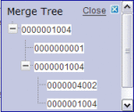 - Expand the tree structure to view the EUIDs that were combined to create the current record.
- To view transaction information for any of the merge transactions, click either of
the EUIDs involved in the transaction.
Figure 26 Merge Transaction History
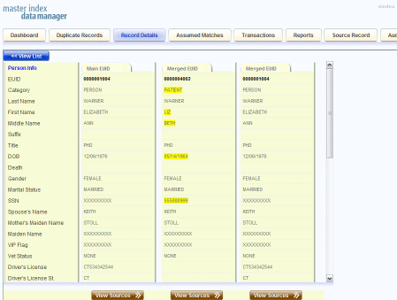
Viewing the MIDM Audit Log
Using the Audit Log function, you can view a record of each instance an MIDM user accessed information about any object in the master index database. The audit log includes instances in which an object profile appeared in a search results list; was viewed or compared; was added, updated, or deactivated; or was merged or unmerged. The audit log can be enabled or disabled by the system administrator.
To View the Audit Log
- Obtain information about the instances you want to view, such as the EUID, a time frame for when they occurred, the type of function that caused the audit log entries, the user who performed the functions, and so on.
- In the tabbed headings, click Audit Log to open the Audit Log search
page.
Figure 27 Audit Log Search Page
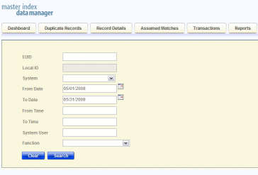 - Enter values into any of the search fields as criteria. For more information
about these fields, see About Audit Log Search Fields on the MIDM.
Note - The EUID field takes precedence over all other search fields on this page. You can only enter a local ID as search criteria after you have entered the corresponding system.
- Click Search.
- On the Audit Log search results list, view the instances in which the
data was accessed. For information about the fields displayed on this page, see
About Audit Log Results Fields on the MIDM.
Figure 28 Audit Log Search Results List
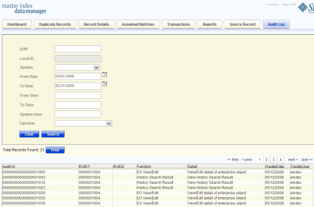
About Audit Log Search Fields on the MIDM
The fields located on the Audit Log Search page allow you to enter search criteria about the audit log entries you want to view. These fields are configurable. The following table describes the fields that are displayed by default.
Table 4 Audit Log Search Fields
In this field … |
type or select ... |
|---|---|
The object’s enterprise-wide unique identifier assigned by the master index application. |
|
The local ID corresponding to the record you want to find and the system selected in the previous field. This field name might be different for your implementation. |
|
The system of the system in which the local ID is known. |
|
The beginning date for the search. The query is performed for audit log entries that fall between the From Date and To Date. |
|
The ending date for the search. |
|
The beginning time for the search using 24-hour notation. The query is performed for audit log entries that fall between the From Time and To Time on the specified dates. If no time is specified, the default value is 00:01 (12:01 A.M.). |
|
The ending time for the search using 24-hour notation. If no time is specified, the default value is 24:00. |
|
The login ID of the user whose transactions you want to view. |
|
The type of transaction that created the audit log entries you want to view. For more information about transaction types, see Audit Log Functions on the MIDM. |
About Audit Log Results Fields on the MIDM
The fields located on the Audit Log Result page display information about the instances in which object data was accessed, where those instances match the search criteria you entered. These fields are configurable. The following table describes the fields that are displayed by default.
Table 5 Audit Log Results Fields
This field … |
displays this information ... |
|---|---|
The unique ID code in the audit log for the audit log entry. |
|
The EUID of the first object profile whose information was accessed. |
|
The EUID of the second object profile whose information was accessed in the same transaction (as would occur in the case of a profile comparison or merge). |
|
The primary transaction type that was used to access information. For more information about transaction types, see Audit Log Functions on the MIDM |
|
Specific information about the actions taken against the profile, such as the MIDM page that was accessed or the type of function performed against a profile. |
|
The date and time that the information was accessed. |
|
The login ID of the user who accessed the information. |
Audit Log Functions on the MIDM
The audit log creates an audit entry whenever data is accessed through the MIDM. The following table lists and describes each audit log function. Some of these functions refer to the actual viewing of data on an MIDM page; others refer to an action taken against that data, such as clicking the merge or unmerge Confirm button or resolving a potential duplicate pair.
Table 6 Audit Log Function Descriptions
Audit Log Function |
Description |
|---|---|
A user added a new object profile to the database from the Create Source Record page or by reversing an assumed match. |
|
A user viewed profile summaries on the Associated Records page of a potential duplicate search. |
|
A user viewed two assumed match profiles on the Assumed Match page. |
|
A user viewed the results of a search for assumed matches. |
|
A user permanently resolved two potential duplicate records on the Potential Duplicate Comparison page. |
|
A user viewed two object profiles on the Comparison page. |
|
A user viewed profile summaries on the Search Results page after performing a search for object profiles. |
|
A user viewed an object profile on the View/Edit page. |
|
A user initiated a merge of two object profiles. This function refers to when the user views the merge result prior to clicking Confirm. |
|
A user finalized an unmerge of two object profiles. |
|
A user initiated an unmerge of two object profiles. This function refers to when the user views the unmerge result prior to clicking Confirm. |
|
A user compared the before and after image of an object profile on the Transaction History Comparison page. |
|
A user viewed the results of a transaction history search on the Transaction History Search Results page. |
|
A user initiated a merge of two source records. This function refers to when the user has selected LID Merge but has not finalized the merge. |
|
A user finalized a merge of two source records. |
|
A user finalized an unmerge of two source records. |
|
A user initiated an unmerge of two source records. This function refers to when the user views the unmerge result record prior to clicking Confirm. |
|
A user viewed the results of a search for potential duplicates. |
|
A user finalized a merge of two object profiles or two source records. |
|
A user viewed a merge tree. This function appears for each object profile included in the merge tree. |
|
A user viewed two object profiles on the Potential Duplicate Comparison page. |
|
A user resolved two potential duplicate records on the Potential Duplicate Comparison page. |
|
A user reversed an assumed match. |
|
A user initiated an unmerge of two source records or two object profiles. This function refers to when the user views the unmerge result record prior to clicking Confirm. |
|
A user changed the status two object profiles on the Potential Duplicate Comparison page from Resolved to Unresolved. |
|
A user modified a profile on the View/Edit window. Updates include any changes made to a profile, including activating and reactivating source records, adding or removing child objects, and so on. |
|
A user viewed a merge tree. |